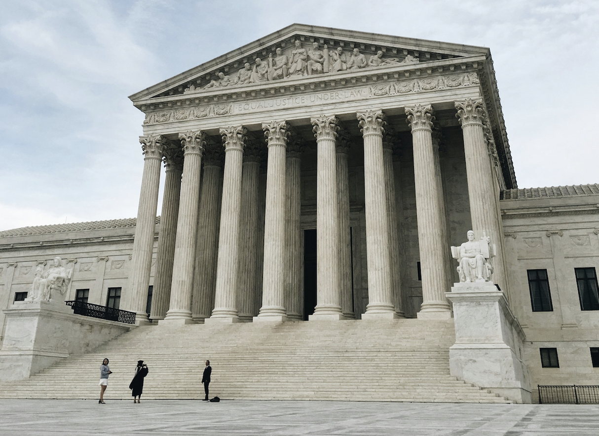

Supreme Court First Amendment cases by the numbers

In recent weeks, the Trump Administration has changed the way journalists can cover President Trump and the federal government in what many experts are citing as an attack on the longstanding tradition of freedom of the press, making it imperative to understand the history of the free press in the U.S.
White House press secretary Karoline Leavitt said on Tuesday that the White House will pick the pool of reporters and news outlets who cover Trump, breaking around a century of precedent. Prior to this change, reporters were chosen to cover the president independently by the White House Correspondents Association.
This was not the only recent change sent down from the federal government journalists. Legacy media outlets, such as NBC News, the New York Times, NPR and Politico, were required to vacate their offices inside the Pentagon on Feb. 14 and make way for new reporters from different outlets.
Journalists and free speech advocates and experts have sounded alarm bells over these actions. New York Times reporter Pete Baker said of the White House's decision to handpick reporters to cover Trump, "Having served as a Moscow correspondent in the early days of Putin’s reign, this reminds me of how the Kremlin took over its own press pool and made sure that only compliant journalists were given access."
So how do these journalists and activists plan to protect freedom of the press? One way is through legal means. The Associated Press has already sued three Trump Administration officials over the administration's decision to ban the publication from covering certain events due to the AP's refusal to refer to the Gulf of Mexico as the Gulf of America, conflictingwith an executive order. Legal proceedings for this case are already underway.
As more cases centering on freedom of speech and of the press are likely to arise due to the administration's actions, it becomes important to look at the tradition of protecting the free press through the court system to understand the situation.
The First Amendment protects the right to freedom of speech and freedom of the press. In these battles of whether the Trump Administration is encroaching on First Amendment rights by placing unprecedented restrictions on the press, the American court system will ultimately have the final say.
The Supreme Court is the nation's highest court, creating precedent and interpretting the Constitution for all of the nation to follow. To get a better picture of the landscape surrounding the courts and First Amendment claims, here are three statistics about First Amendment cases heard by the Supreme Court from 1946-2024:
1. Less than one-tenth of cases heard by the Supreme Court dealt with First Amendment disputes.
.png){kind=link}
2. The proportion of First Amendment to total cases heard by the Supreme Court has remained roughly similar throughout the years.
.png){kind=link}
3. In a typical year, the Supreme Court will decide roughly half or less of First Amendment cases unanimously.
.png){kind=link}